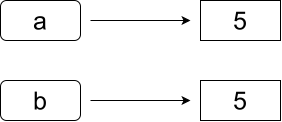
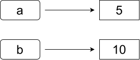
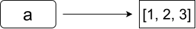
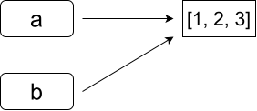
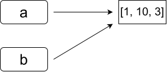

JavaScript

Le JavaScript est un langage de programmation, parmi les plus utilisés au monde
Il existe un language de programmation nommé Java, qui n'a absolument rien à voir avec JavaScript.
Il ne faut pas les confondre
De nombreux tutoriels et documentations sont disponibles sur presque tous les supports (livres, sites internet, vidéos, etc.)
N'hésitez pas à chercher sur internet dès que vous avez une questions.
Savoir utiliser une documentation doit faire partie de vos compétences
Le JavaScript (plus précisément ECMAScript) est une syntaxe qui décrit des opérations à effectuer.
Comme pour la plupart des languages des programmation, l'exécution se fait ligne par ligne.
L'exécution est faite par un programme spécifique, un moteur JavaScript, intégré au navigateur web.
Il existe d'autres moteurs JavaScript qui ne sont pas intégrés à un navigateur, comme Node.js que nous verrons plus tard.
En HTML, le javascript s'écrit toujours via une balise <script>.
Il peut s'écrire directement dans la balise :
<!DOCTYPE html>
<html>
<head>
<title>JavaScript</title>
</head>
<body>
<script>
console.log('Hello World!');
</script>
</body>
</html>
En HTML, le javascript s'écrit toujours via une balise <script>.
Ou référencer le contenu d'un fichier externe :
<!DOCTYPE html>
<html>
<head>
<title>JavaScript</title>
</head>
<body>
<script src="script.js"></script>
</body>
</html>
Ces deux codes sont équivalents si script.js contient console.log('Hello World!');
Le JavaScript s'exécute dans l'ordre de lecture de la page par le navigateur.
Cela implique qu'un script ne peut accéder qu'aux éléments déjà analysés.
Par défaut, l'exécution du JavaScript est bloquante pour le chargement de la page. On placera généralement la balise <script> à la fin de la balise <body> pour ne pas ralentir le chargement.
<!DOCTYPE html>
<html>
<head>
<title>JavaScript</title>
<script>...</script> -> Exécuté avant le chargement du body, il ne pourra pas y accéder
</head>
<body>
<script>...</script> -> Exécuté après le chargement du body et avant celui du h1
<h1> Titre </h1>
<script>...</script> -> Exécuté une fois tous les éléments chargés
</body>
</html>
JavaScript utilise un typage implicite.
Comme en Python, on ne déclare pas le type des variables. Les variables sont déclarées avec let, ou avec const si leur valeur ne change pas.
let maVariable = 3; // Déclare une variable, sa valeur pourra changer
const maVariable = 3; // Déclare une constante, changer sa valeur provoquera une erreur
Selon la norme ECMAScript, toutes les instructions en JavaScript doivent se terminer par un point-virgule, mais l’interpréteur acceptera si vous ne les mettez pas. Prenez l'habitude de respecter le standard et de toujours les utiliser.
Il est possible de déclarer des variable avec var ou sans utiliser de préfixe. Cela déclare une variable globale au contexte courant.
On ne l'utilise plus en pratique, cela créé des confusions.
// Ces deux lignes font la même chose. maVariable sera globale à la fonction courante
maVariable = 3;
var maVariable = 3;
// Ces syntaxes sont désuètes, à ne pas utiliser
Bien que le typage sont implicite, toutes les variables en JavaScript possèdent un type.
Il existe 7 types de base.
const maVariable = "JavaScript"; // Chaîne de caractères
const maVariable = 3.14; // Nombre réel
const maVariable = true; // Booléen
const maVariable = null; // null, indique l'absence d'un objet
const maVariable = undefined; // undefined, indique "pas de valeur", "non déclaré"
const maVariable = BigInt(3); // BigInt, entier sans limites
const maVariable = Symbol("foo"); // Symbol, pas utile dans ce cours
L'instruction typeof retourne le type de la variable sous forme de chaîne de caractères
const maVariable = false;
const typeDeMaVariable = typeof maVariable; // typeDeMaVariable vaut "boolean"
Il existe également d'autres types non basiques, qui sont des structures stockant des types basiques (tableaux, objets, etc).
Pour afficher un texte dans la console :
console.log("Bonjour"); // Affichera "Bonjour" dans la console
console.warn("Attention"); // Affichera un message d'avertissement
console.error("Erreur"); // Affichera un message d'erreur
La fonction print() existe en JavaScript, mais il s'agit de la commande pour imprimer la page web !
La console des navigateurs web permet d'afficher plus que du texte. Il est possible d'afficher et d'explorer des variables, des objets, etc. Utilisez-la pour debugger votre code.
Les comparaisons se font de manière classique :
console.log(3 < 2); // false
console.log(3 >= 2); // true
console.log(3 == 2); // false
console.log(3 != 2); // false
Les opérateurs === et !== permettent de tester la valeur et le type :
console.log(2 == "2"); // true car les valeurs sont identiques, peu importe le type
console.log(2 === "2"); // false car les types sont différents
console.log(2 != "2"); // false
console.log(2 !== "2"); // true
Les opérateurs && , || et ! fonctionnent respectivement comme and, or et not en Python
console.log( !(2 != "2" || 3 < 2) && 0 < 4); // true
En JavaScript on retrouve les opérations des base : addition +, soustraction -, multiplication *, division /, modulo % (reste d'une division entière).
Il existe également les opérateurs d'assignement : +=, -=, *=, /=
x += y est équivalent à x = x + y, idem pour les autres opérateurs
Il existe aussi les opérateurs d'incrémentation ++ et de décrémentation --
x++ est équivalent à x = x + 1 et x-- est équivalent à x = x - 1
L'opérateur + sert de concaténation pour les chaînes de caractères.
"Hello " + "World" donne "Hello World"
Pour tous les détails, voir https://www.w3schools.com/js/js_operators.asp
Toutes les fonctions de math avancées se font grâce à l'objet Math
Math.abs(x) : valeur absolueMath.log(x), Math.exp(x): logarithme et exponentielleMath.min(x, y, z, ...), Math.max(x, y, z, ...) : minimum et maximum de plusieurs valeursMath.random() : nombre aléatoire dans l'intervalle [0, 1[Math.sqrt(x), Math.pow(x, y) : racine carrée et puissanceMath.round(x), Math.floor(x), Math.ceil(x) : Arrondi resp. au plus proche, inférieur, supérieurMath.PI : πRéférence complète : https://developer.mozilla.org/fr/docs/Web/JavaScript/Reference/Global_Objects/Math
Les opérateurs mathématiques peuvent être utilisés entre tout types, mais attention aux comportements surprenants !
L'addition est particulière.
console.log(3 + 5); // 8 Addition standard
console.log("3" + "5"); // "35" Concaténation de texte
console.log(3 + "5"); // "35" Dès qu'un opérateur est un texte, c'est une concaténation
console.log(3 - 5); // -2 Soustraction standard
console.log("3" - "5"); // -2 La soustraction converti automatique tout texte en nombre
console.log("3" - "A"); // NaN Si un texte n'est pas convertible, retourne la valeur NaN
console.log("3" * "5"); // 15 Idem pour tous les autres opérateurs
console.log("3" * true); // 3 true vaut 1, false vaut 0
console.log("3" - null); // 3 null est converti en la valeur 0
console.log("3" - []); // 3 Les tableau vides valent 0
console.log("3" - undefined); // NaN Une opération avec "undefined" provoquera toujours un Nan
Il existe beaucoup d'autres cas. On appelle cette "conversion automatique" entre types la coercition. Retenez : Éviter au maximum les opérations entres types différents !
Pas convaincu de ne pas mélanger les types ?
console.log(('b' + 'a' + + 'lancer' + 'a').toLowerCase()); // Qu'affiche ceci ?
console.log('b' + 'a' + (+ 'lancer') + 'a'); // 'a'++ n'est pas valide
console.log('b' + 'a' + NaN + 'a'); // 'lancer' est converti en nombre, invalide donc NaN
console.log('baNaNa'); // NaN est converti en texte via l'addition
console.log('baNaNa'.toLowerCase()); // Met le texte en minuscules
console.log(('b' + 'a' + + 'lancer' + 'a').toLowerCase()); // Affichera "banana"
Liste d'opérations WTF en JavaScript: https://github.com/denysdovhan/wtfjs
Les conditions s'écrivent de la manière suivante :
if(a < b){
console.log("Do A");
}else if(a < c){
console.log("Do B");
}else{
console.log("Do C");
}
Comme en Python, les blocs else if et else sont facultatifs
Il est aussi possible de faire des ternaires avec la syntaxe condition ? si_vrai : si_faux
const a = 5;
const value = a > 3 ? "Plus grand" : "Plus petit ou égal";
console.log(value); // "Plus grand"
Pour répéter des instructions plusieurs fois, il existe les boucles
let text = "";
while(text != "Bonjour"){
text = prompt("Dites 'Bonjour' !"); // prompt() Demande à l'utilisateur d'entrer un texte
}
console.log("Vous avez dit bonjour !");
La boucle while répète son contenu tant que la condition est vraie.
La boucle while est utile quand on ne connaît pas le nombre de répétitions à faire.
Attention à toujours vous assurer que la boucle se terminera, sinon c'est une boucle infinie
La boucle for est une autre manière de répéter des instructions
for(let i=0; i<10; i++){
console.log(i); // 0 1 2 3 4 5 6 7 8 9
}
La boucle for(initialisateur ; condition ; iteration ) :
initialisateur avant d'entrer dans la boucleiteration après chaque tour de bouclecondition est vraie
Ce type de boucle est utile quand on connait le nombre de répétitions à faire.
Elle permet d'éviter des erreurs qui créent des bouclent infinies, car il est plus simple de voir que la boucle s'arrêtera dans tous les cas.
Dans une boucle, l'instruction break sort immédiatement de la boucle, sans condition.
const a = [/*...*/];
for(let i=0; i<a.length; i++){
if (a[i] == 0) { // Si a[i] vaut zéro, sort de la boucle
break;
}
console.log(`${1/a[i]}`); // Affichera l'inverse des éléments du tableau, jusqu'au premier zéro
}
Dans une boucle, l'instruction continue passe immédiatement à l'itération suivante.
const a = [/*...*/];
for(let i=0; i<a.length; i++){
if (a[i] == 0) { // Si a[i] vaut zéro, passe à l'itération suivante
continue;
}
console.log(`${1/a[i]}`); // Affichera l'inverse des éléments du tableau, sauf ceux valant zéro
}
Les tableaux sont l'équivalent des listes en Python
const a = []; // Tableau vide
const b = [1, 2, 3]; // Tableau de nombres
const c = [1, "a", null, 12.4, [1,2] ]; // Les tableaux peuvent contenir un mélange de types
console.log(c[1]); // Accès aux éléments : affiche "a".
c[58] = true; // On peut assigner n'importe quel élément d'un tableau.
// Tous les éléments non assignés valent 'undefined'
b.push(5); // "push" ajoute un élément, b vaut alors [ 1, 2, 3, 5 ]
b.pop(); // "pop" supprime et renvoie le dernier élément
// b contient alors [1, 2, 3]
console.log(b.length); // Affiche 3. "length" retourne la taille du tableau
const d = [[1,2,3], [4,5,6], [7,8,9]]; // Il est possible d'avoir des tableaux de tableaux
console.log(d[1][2]); // Affiche 6
La numérotation des tableaux commence toujours à 0. tab[3] affichera donc le 4eme élément de tab.
Techniquement, en JavaScript, les tableaux sont des objets. typeof [] retourne "object"
array.lengtharray.push(2)array.pop(). Renvoi l'élément retiréarray.sort() Trie le tableau et le renvoiearray.reverse(). Inverse l'ordre des éléments et renvoie le tableauarray.includes('value'). Retourne 'true' si le tableau contient 'value', 'false' sinonEt bien d'autres : https://www.w3schools.com/js/js_array_methods.asp
Un objet en JavaScript est équivalent à un dictionnaire en Python
const object = {
key1 : 3,
key2 : "Value",
key3 : {
subkey1 : true,
subkey2 : 5
},
key4 : [4,5,6]
};
Un objet est un ensemble clés possédant chacune une valeur
On accède à une valeur à l'aide de la clé, soit à la manière d'un tableau soit avec un point :
console.log(object['key2']); // "Value"
console.log(object.key2); // "Value"
Il est possible de créer une clé directement en l'assignant
object['newkey'] = "newValue";
object.otherNewKey = "OtherNewValue";
Il est possible de supprimer une clé avec l'instruction delete
delete object['newkey'];
delete object.otherNewKey;
Il existe la boucle for(... of ...){} pour itérer dans des tableaux :
const table = ["a", "c", "e", "g"];
for(const value of table){
console.log(value) // a c e g
}
Il existe la boucle for(... in ...){} pour itérer dans des objets :
const obj = {
k1 : "v1",
k2 : 3,
k3 : true
};
for(const key in obj){
console.log(key + " : " + obj[key]); // k1 : v1 k2 : 3 k3 : true
}
En JavaScript, il existe une différence fondamentale entre les types de base et les objets.
Qu'affiche ce code ?
let a = 5;
let b = a;
b = 10;
console.log(a);
console.log(b);
Ce code affichera :
5
10
Rien de très surprenant


En JavaScript les types de base sont immuables. Un assignment créera toujours une copie.
En JavaScript, il existe une différence fondamentale entre les types de base et les objets.
Qu'affiche ce code ?
let a = [1, 2, 3];
let b = a;
b[1] = 10;
console.log(a);
console.log(b);
Ce code affichera :
[1, 10, 3]
[1, 10, 3]



En JavaScript les types non basiques sont mutables. Un assignment créera une référence vers l'objet.